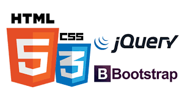
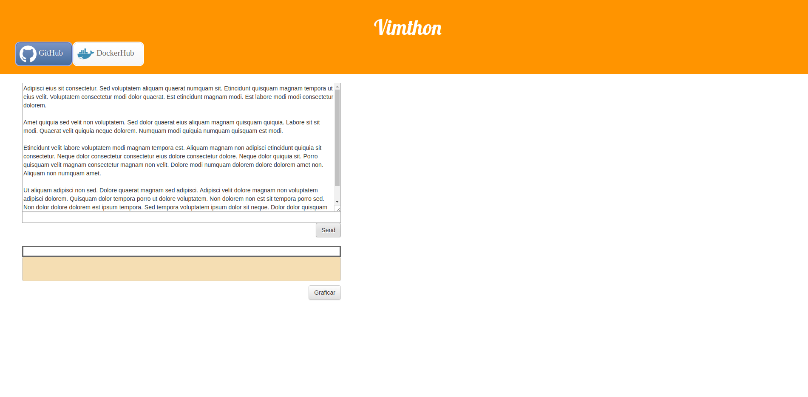

Vimthon - Segundo Trabajo de Entrega
Fundamentos Teóricos de Informática
Cátedra
Lic. Celia Cintas
Lic. Samuel Almonacid
Lic. Pablo Navarro
Integrantes
Luciano Serruya Aloisi
Pablo Toledo Margalef
Enunciado
Implemente un analizador sintáctico (reducido) LL o LR de algún lenguaje de programación. Este debe poder detectar:
- Asignaciones
- Dos estructuras de control a elección, (léase if-then-else, while, for, select, etc.)
La salida de este programa deberá mostrar el árbol de derivaciones del archivo pasado por parámetro.
Implementación
- Aplicación Web desarrollada en python (backend)
- Microframework Flask
- HTML, CSS, Jquery (frontend)
- Nearley como herramienta para escribir la gramática 


Implementación
